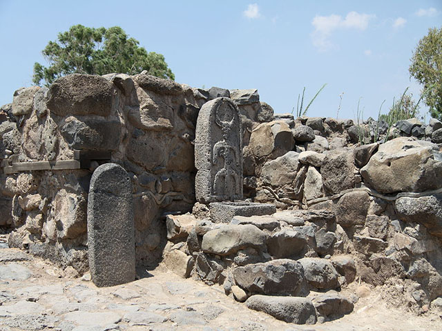
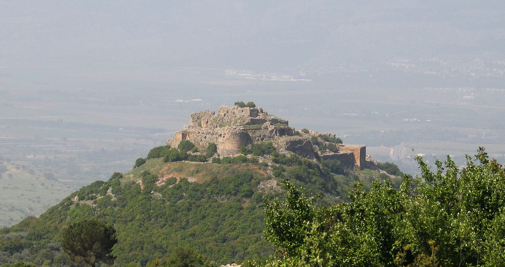
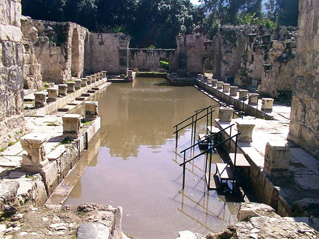

القنيطرة محافظة سورية تقع جنوب غربي سوريا، وتعد أصغر محافظات البلاد بمساحة تبلغ نحو 1860 كيلومترا مربعا، منها 1200 كيلومتر مربع من أراضي الجولان المحتل يغلب النشاط الزراعي على الأنشطة الاقتصادية الأخرى لدى سكان محافظة القنيطرة، وذلك بسبب أراضيها الخصبة، ومن أبرز مزروعاتها القمح والطماطم.
من المعالم الاثرية : بيت صيدا
الحمة
قلعة صبيبة
  